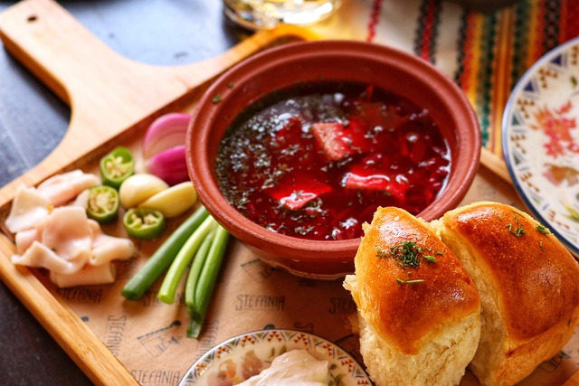

Golden Wheat Borscht

Description: A rich, slow-cooked beet soup with tender beef prime rib,
served with smoked sour cream and garlic-infused pampushky.
(Борщ з яловичим ребром, підкопченою сметаною та часниковими пампушками)